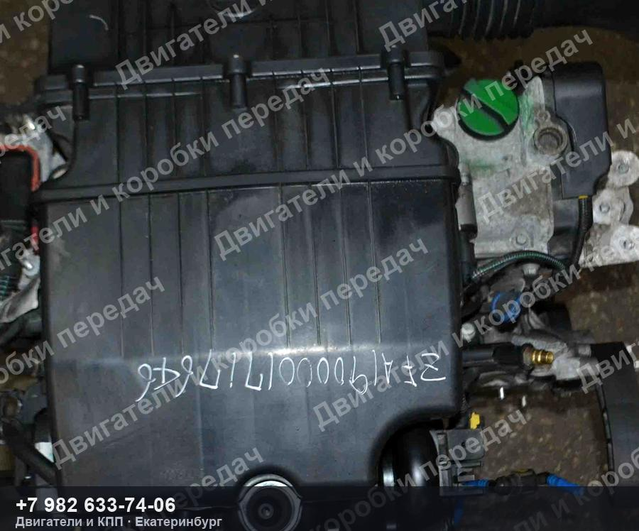
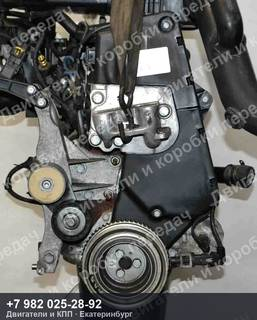
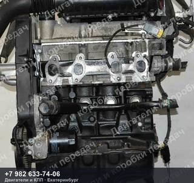
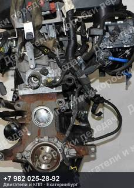
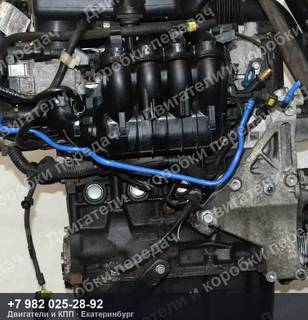

Контрактный двигатель Fiat PUNTO
133 000 ₽
Контрактный двигатель Fiat PUNTO — 1.4 л, 77 л.с., 350A1000.
Комплектация: без генератора, кондиционера, сцепления
| Марка | FIAT |
| Модель | PUNTO |
| Двигатель | 350A1000 |
| OEM-номера | 71754188 |
| Состояние | Б/у |
| Артикул | ДК-590659 |
Гарантия на проверку и установку · бесплатная доставка до транспортной компании ·
отправим фото и видео агрегата до оплаты
Контрактный двигатель Fiat PUNTO — что важно знать
Агрегат снят с автомобиля FIAT PUNTO. Двигатель 350A1000. Подходящие OEM-номера: 71754188.
Перед отправкой агрегат проверяем и фотографируем. Пришлём фотографии и видео работы именно этого экземпляра, поможем проверить совместимость по VIN вашего автомобиля. Отправка из Екатеринбурге до транспортной компании — бесплатно, дальше — любой ТК до вашего города.
Не нашли свой контрактный двигатель Fiat PUNTO?
Пришлите VIN или марку с моделью — проверим по складу и подберём то, что точно встанет на вашу машину. Ответим и подскажем, даже если у нас этого нет.